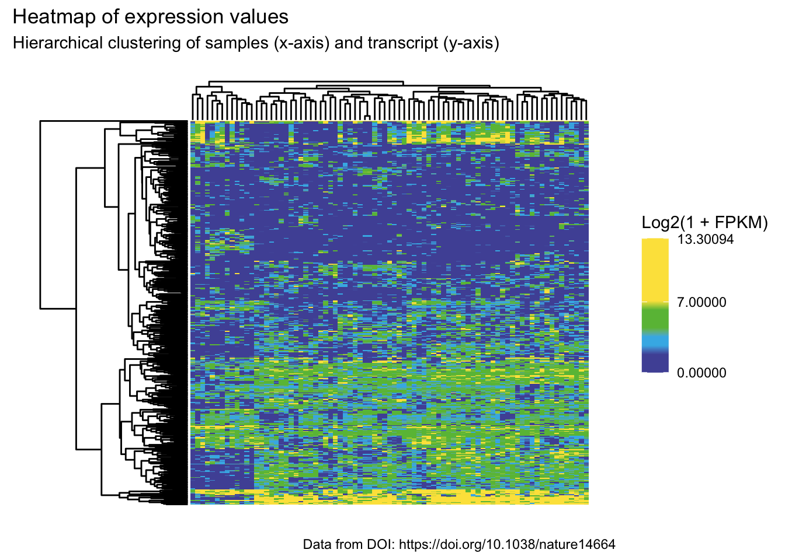

library("tidyverse")
library("here")
library("ggdendroplot")
source(here("R/99_proj_func.R"))06 - Create heatmap analysis
R for Bio Data Science
Load libraries
Load selected transcript data
select_transcript_meta <-
read_tsv(here("data/03_dat_augment.tsv"))
select_transcript_meta# A tibble: 81 × 433
sample_id normal tumor snp_array_6_0_affyme…¹ rna_seq whole_genome_sequenc…²
<chr> <chr> <chr> <chr> <chr> <chr>
1 S00022 FF tis… FF t… yes yes yes
2 S00035 blood FF t… yes yes yes
3 S00050 FF tis… FF t… yes yes yes
4 S00213 <NA> FF t… yes yes no
5 S00356 FF tis… FF t… yes yes yes
6 S00472 FF tis… FF t… yes yes yes
7 S00501 FF tis… FF t… yes yes yes
8 S00825 FF tis… FF t… yes yes yes
9 S00827 FF tis… FF t… yes yes yes
10 S00829 FF tis… FF t… yes yes yes
# ℹ 71 more rows
# ℹ abbreviated names: ¹snp_array_6_0_affymetrix, ²whole_genome_sequencing
# ℹ 427 more variables: whole_exome_sequencing <chr>,
# targeted_sequencing <chr>, pathology_review_1 <chr>,
# pathology_review_2 <chr>, pathology_review_3 <chr>, age <dbl>, sex <chr>,
# ethnicity <chr>, stage_t <chr>, stage_n <chr>, stage_m <chr>,
# stage_uicc <chr>, smoking_status <chr>, smoking_history_pack_years <dbl>, …Select expression data and pivot to have transcripts as rows and log2(1+FPKM) expression values
selected_transcript_expr_log <- select_transcript_meta |>
select(1, 34:ncol(select_transcript_meta)) |>
pivot_longer(
col = -sample_id,
names_to = "transcript_id",
values_to = "expression_value"
) |>
mutate(expression_value = log2(1 + expression_value)) |>
pivot_wider(
names_from = sample_id,
values_from = expression_value
)
selected_transcript_expr_log# A tibble: 400 × 82
transcript_id S00022 S00035 S00050 S00213 S00356 S00472 S00501 S00825
<chr> <dbl> <dbl> <dbl> <dbl> <dbl> <dbl> <dbl> <dbl>
1 ABP1_NM_001091 3.57e-1 3.05e+0 4.87e-1 2.63 1.69e+0 5.12e+0 7.25e+0 3.03e+0
2 ACTL6B_NM_016… 2.83e+0 1.95e+0 6.14e+0 3.37 4.70e+0 4.42e+0 4.06e+0 3.45e+0
3 ADCYAP1_NM_00… 2.54e+0 2.14e+0 4.10e+0 2.09 3.92e+0 3.90e+0 6.20e+0 2.85e+0
4 AGER_NM_001136 0 8.05e-1 1.67e-1 2.23 5.82e+0 1.24e+0 2.24e+0 5.89e+0
5 AHCYL1_NM_001… 2.89e-6 3.64e+0 1.44e-6 4.23 6.51e-4 7.49e-4 5.91e-5 2.97e+0
6 ANP32E_NM_001… 0 2.79e+0 5.39e-2 3.84 4.36e-1 3.51e-1 0 1.43e+0
7 ANXA1_NM_0007… 3.13e+0 5.58e+0 3.62e+0 5.68 5.47e+0 4.09e+0 5.04e+0 6.60e+0
8 API5_NM_00124… 7.21e-6 9.09e-5 1.44e-6 0 0 1.44e-6 0 1.15e-5
9 API5_NM_006595 3.78e+0 4.80e+0 4.12e+0 4.44 3.93e+0 3.72e+0 4.06e+0 4.14e+0
10 APLP2_NM_0011… 1.12e-1 0 0 0 0 1.57e-1 1.51e-1 0
# ℹ 390 more rows
# ℹ 73 more variables: S00827 <dbl>, S00829 <dbl>, S00830 <dbl>, S00831 <dbl>,
# S00832 <dbl>, S00836 <dbl>, S00837 <dbl>, S00838 <dbl>, S01242 <dbl>,
# S01248 <dbl>, S01297 <dbl>, S01366 <dbl>, S01453 <dbl>, S01494 <dbl>,
# S01512 <dbl>, S01524 <dbl>, S01542 <dbl>, S01556 <dbl>, S01563 <dbl>,
# S01578 <dbl>, S01698 <dbl>, S01728 <dbl>, S01792 <dbl>, S01861 <dbl>,
# S01864 <dbl>, S01873 <dbl>, S02065 <dbl>, S02093 <dbl>, S02120 <dbl>, …Hierarchical clustering for Heatmap and Dendrograms
# Put to matrix format for compatible hclust(dist())
expr_matrix <- selected_transcript_expr_log |>
select(-transcript_id) |>
as.matrix()
rownames(expr_matrix) <- selected_transcript_expr_log |>
select(transcript_id) |>
as_vector()
# Perform hierarchical clustering
transcript_clus <- expr_matrix |>
dist() |>
hclust()
sample_clus <- expr_matrix |>
t() |>
dist() |>
hclust()
# bring the data.frame into a from easily usable by ggplot
hm <- hmReady(expr_matrix, colclus = sample_clus, rowclus = transcript_clus)
# Setup color vector for beautiful colors
color_vector <- c("#5154A5", "#5154A5", "#5154A5",
"#41B6E8", "#41B6E8",
"#69BD44", "#69BD44", "#69BD44",
"#FCE349", "#FCE349", "#FCE349", "#FCE349", "#FCE349", "#FCE349", "#FCE349", "#FCE349")
max_expr_val <- selected_transcript_expr_log |>
group_by(transcript_id) |>
nest() |>
mutate(max_val_transcript = unlist(map(.x = data,
.f = ~max(.x)))) |>
pull(max_val_transcript) |>
max()
# plot the heatmap
hmplot <- ggplot() +
geom_tile(data = hm, aes(x = x, y = y, fill = value)) +
scale_y_reverse() +
geom_dendro(sample_clus, ylim = c(0, -40), axis.labels = FALSE) +
geom_dendro(transcript_clus, xlim = c(0, -30), pointing = "side", axis.labels = FALSE) +
scale_fill_gradientn(colors = color_vector,
breaks = c(0, 7, max_expr_val)) +
labs(fill = 'Log2(1 + FPKM)',
title = 'Heatmap of expression values',
subtitle = 'Hierarchical clustering of samples (x-axis) and transcript (y-axis)',
caption = "Data from DOI: https://doi.org/10.1038/nature14664") +
theme_minimal() +
theme(panel.grid = element_blank(),
axis.line = element_blank(),
axis.text = element_blank(),
axis.ticks = element_blank(),
axis.title.x = element_blank(),
axis.title.y = element_blank())
ggsave(here("results/06_heatmap_plot.png"), hmplot)
# Printing plot
hmplot